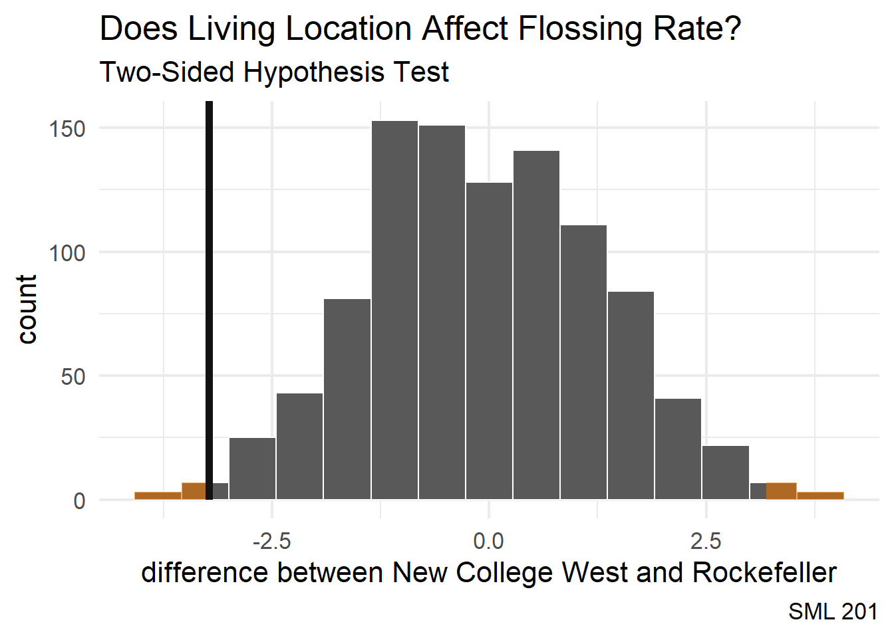

library("ggsignif") #put significance "stars" on boxplots
library("infer") #pipeline workflow for hypothesis testing
library("janitor") #compute proportions easily
library("moderndive") #textbook's package and data
library("patchwork") #easily let's me show graphs side-by-side
library("tidyverse") #the overall programming style universe
# school colors
princeton_orange <- "#E77500"
princeton_black <- "#121212"
# data set: SML 201 demographics survey
# demo_df <- readr::read_csv("https://raw.githubusercontent.com/dsollberger/sml201slides/main/posts/04_categories/sml201survey.csv")
demo_df <- readr::read_csv("sml201survey.csv")
# helper function
vnorm <- function(x, mu = 0, sigma = 1, section = "lower"){
# bell curve
x_vals <- seq(mu - 4*sigma, mu + 4*sigma, length.out = 201)
y_vals <- dnorm(x_vals, mu, sigma)
df_for_graph <- data.frame(x_vals, y_vals)
# outline shaded regions
if(length(x) == 1){
shade_left <- rbind(c(x[1],0), df_for_graph |>
filter(x_vals < x[1]))
shade_right <- rbind(c(x[1],0), df_for_graph |>
filter(x_vals > x[1]))
}
if(length(x) == 2){
shade_between <- rbind(c(x[1],0),
df_for_graph |>
filter(x_vals > x[1] &
x_vals < x[2]),
c(x[2],0))
shade_tails <- rbind(df_for_graph |>
filter(x_vals < x[1]),
c(x[1],0),
c(x[2],0),
df_for_graph |>
filter(x_vals > x[2]))
}
if(section == "lower"){
bell_curve <- df_for_graph |>
ggplot(aes(x_vals, y_vals)) +
geom_polygon(aes(x = x_vals, y = y_vals),
data = shade_left,
fill = "#E77500",) +
geom_line(color = "gray50", linewidth = 2)
prob_val <- round(pnorm(x,mu,sigma), 4)
}
if(section == "upper"){
bell_curve <- df_for_graph |>
ggplot(aes(x_vals, y_vals)) +
geom_polygon(aes(x = x_vals, y = y_vals),
data = shade_right,
fill = "#E77500",) +
geom_line(color = "gray50", linewidth = 2)
prob_val <- 1 - round(pnorm(x,mu,sigma), 4)
}
if(section == "between"){
bell_curve <- df_for_graph |>
ggplot(aes(x_vals, y_vals)) +
geom_polygon(aes(x = x_vals, y = y_vals),
data = shade_between,
fill = "#E77500",) +
geom_line(color = "gray50", linewidth = 2)
prob_val <- round(diff(pnorm(x,mu,sigma)), 4)
}
if(section == "tails"){
bell_curve <- df_for_graph |>
ggplot(aes(x_vals, y_vals)) +
geom_polygon(aes(x = x_vals, y = y_vals),
data = shade_tails,
fill = "#E77500",) +
geom_line(color = "gray50", linewidth = 2)
prob_val <- round(1 - diff(pnorm(x,mu,sigma)), 4)
}
# plot bell curve
bell_curve +
labs(subtitle = paste0("Probability: ", prob_val),
caption = "SML 201", y = "") +
theme_minimal()
}SML 201
Libraries and Helper Functions
Start
Goal: Continue to explore hypothesis testing and two-sided tests
Objective: Get “stars” and significance levels
Case Study: GPA vs Beverage
- Colloquially: Coffee and tea drinkers have different GPAs (grade point averages)
- Null hypothesis: Coffee and tea drinkers have the same GPA
- Alternative hypothesis: Coffee and tea drinkers have different GPAs
\[H_{o}: \mu_{c} = \mu_{t}\] \[H_{a}: \mu_{c} \neq \mu_{t}\]
Survey Data
summary(demo_df$GPA) Min. 1st Qu. Median Mean 3rd Qu. Max. NA's
0.000 3.406 3.600 3.547 3.800 4.650 13 Clean Data
demo_long <- demo_df |>
select(GPA, coffeeTea) |>
filter(GPA > 0 & GPA <= 4.0) |>
drop_na()demo_long |>
group_by(coffeeTea) |>
summarize(xbar = mean(GPA))# A tibble: 3 × 2
coffeeTea xbar
<chr> <dbl>
1 (neither) 3.63
2 coffee 3.57
3 tea 3.55Boxplot
demo_long |>
filter(coffeeTea %in% c("coffee", "tea")) |>
ggplot(aes(x = coffeeTea, y = GPA)) +
geom_boxplot(color = princeton_black, fill = princeton_orange) +
labs(title = "Does Beverage Choice affect GPA?",
subtitle = "(toward two-means hypothesis testing)",
caption = "SML 201",
x = "beverage", y = "grade point average") +
theme_minimal(base_size = 16)
Intuition
The boxplot visualization lets us guess at whether or not the means for the two groups are significantly different (or not).
Modern Approach (infer)
Null Distribution
In the modern approach, with the infer code package, we build a null distribution (i.e. assuming the same GPA for coffee and tea drinkers).
Permutation Test
If the beverage choice here did not affect GPA, then it shouldn’t matter if we permute the “coffee” or “tea” labels.
null_distribution <- demo_long |>
filter(coffeeTea %in% c("coffee", "tea")) |>
specify(formula = GPA ~ coffeeTea) |>
hypothesize(null = "independence") |>
generate(reps = 1000, type = "permute") |>
calculate(stat = "diff in means", order = c("coffee", "tea"))obs_diff <- demo_long |>
filter(coffeeTea %in% c("coffee", "tea")) |>
specify(formula = GPA ~ coffeeTea) |>
# hypothesize(null = "independence") |>
# generate(reps = 1000, type = "permute") |>
calculate(stat = "diff in means", order = c("coffee", "tea"))Visualization
p-value
“The p-value is the probability of obtaining a test statistic just as extreme or more extreme than the observed test statistic assuming the null hypothesis \(H_0\) is true”
null_distribution |>
visualize() +
labs(title = "Does Beverage Affect GPA?",
subtitle = "Two-Sided Hypothesis Test",
caption = "SML 201",
x = "difference between coffee and tea drinkers") +
shade_p_value(obs_diff, direction = "two-sided",
color = princeton_black, fill = princeton_orange) +
theme_minimal(base_size = 16)
Two-Sided
Since our p-value search looks at both tails of the null distribution, we call this a two-sided test.
Conclusion
null_distribution |> get_p_value(obs_diff, direction = "two-sided")# A tibble: 1 × 1
p_value
<dbl>
1 0.676
Inconclusive
Since the p-value > 0.05, we have failed to reject the null hypothesis that the GPA for coffee and tea drinkers are the same (at the \(\alpha = 0.05\) significance level).
We may treat this result as inconclusive or note that we have not found evidence here toward showing that beverage choice affects GPA attainment.
Case Study: Colleges and Flossing
\[H_{o}: \mu_{\tiny\text{NCW}} = \mu_{\tiny\text{Rockefeller}}\] \[H_{a}: \mu_{\tiny\text{NCW}} \neq \mu_{\tiny\text{Rockefeller}}\]
Boxplot
demo_long <- demo_df |>
select(residentialCollege, flossing) |>
drop_na()
demo_long |>
filter(residentialCollege %in% c("New College West", "Rockefeller")) |>
ggplot(aes(x = residentialCollege, y = flossing)) +
geom_boxplot(color = princeton_black, fill = princeton_orange) +
labs(title = "Does Residential College affect Flossing Frequency?",
subtitle = "(toward two-means hypothesis testing)",
caption = "SML 201",
x = "", y = "times flossing per week") +
theme_minimal(base_size = 16)Permutation Test
null_distribution <- demo_long |>
filter(residentialCollege %in% c("New College West", "Rockefeller")) |>
specify(formula = flossing ~ residentialCollege) |>
hypothesize(null = "independence") |>
generate(reps = 1000, type = "permute") |>
calculate(stat = "diff in means", order = c("New College West", "Rockefeller"))
obs_diff <- demo_long |>
filter(residentialCollege %in% c("New College West", "Rockefeller")) |>
specify(formula = flossing ~ residentialCollege) |>
# hypothesize(null = "independence") |>
# generate(reps = 1000, type = "permute") |>
calculate(stat = "diff in means", order = c("New College West", "Rockefeller"))
null_distribution |>
visualize() +
labs(title = "Does Living Location Affect Flossing Rate?",
subtitle = "Two-Sided Hypothesis Test",
caption = "SML 201",
x = "difference between New College West and Rockefeller") +
shade_p_value(obs_diff, direction = "two-sided",
color = princeton_black, fill = princeton_orange) +
theme_minimal(base_size = 16)
Conclusion
null_distribution |> get_p_value(obs_diff, direction = "two-sided")# A tibble: 1 × 1
p_value
<dbl>
1 0.018
Some Evidence
Since the p-value < 0.05, we have reject the null hypothesis that the flossing frequency is the same for students at New College West and Rockefeller (at the \(\alpha = 0.05\) significance level).
We may treat this result as having found some evidence that there may be a relationship between these two residential colleges and flossing frequency.
Old Method (t-test)
Pooled Variance
The old-fashioned way of computing a two-means hypothesis test was conducted through the \(t\)-distribution through the pooled variance
\[t = \frac{\bar{x}_{1} - \bar{x}_{2}}{\sqrt{\frac{s_{p}^{2}}{n_{1}} + \frac{s_{p}^{2}}{n_{2}}}} \text{ with } s_{p}^{2} = \frac{(n_{1}-1)s_{1}^{2} + (n_{2}-1)^{2}s_{2}^{2}}{n_{1} + n_{2} - 2}\]
demo_wide <- demo_long |>
pivot_wider(names_from = residentialCollege,
values_from = flossing,
values_fn = list)NCW <- unlist(demo_wide$`New College West`)
Rocky <- unlist(demo_wide$Rockefeller)
xbar1 <- mean(NCW)
xbar2 <- mean(Rocky)
s1 <- sd(NCW)
s2 <- sd(Rocky)
n1 <- length(NCW)
n2 <- length(Rocky)
pooled_var <- ((n1 - 1)*s1^2 + (n2-1)*s2^2) / (n1 + n2 - 2)
t_stat <- (xbar1 - xbar2) / sqrt(pooled_var/n1 + pooled_var/n2)
crit_val <- qt(c(0.025, 0.975), df = n1 + n2 - 2)Comparison
Critical Region
That is, in order to reject the null hypothesis, we wanted the \(t\) statistic to be inside of the critical region.
p1 <- vnorm(crit_val, section = "tails") +
geom_vline(aes(xintercept = t_stat),
color = "red", linewidth = 2) +
labs(title = "Critical Region",
subtitle = "Two-sided hypothesis test",
caption = "SML 201",
x = "t distribution") +
scale_x_continuous(breaks = t_stat,
labels = "t statistic")
p2 <- vnorm(t_stat, section = "lower") +
geom_vline(aes(xintercept = t_stat),
color = "red", linewidth = 2) +
labs(title = "p-value",
subtitle = "Two-sided hypothesis test",
caption = "SML 201",
x = "t distribution") +
scale_x_continuous(breaks = t_stat,
labels = "t statistic")
# patchwork
p1 / p2t.test
t.test(NCW, Rocky, alternative = "two.sided")
Welch Two Sample t-test
data: NCW and Rocky
t = -2.5613, df = 21.1, p-value = 0.01815
alternative hypothesis: true difference in means is not equal to 0
95 percent confidence interval:
-5.8556895 -0.6085962
sample estimates:
mean of x mean of y
3.125000 6.357143
Some Evidence
Since the p-value < 0.05, we have reject the null hypothesis that the flossing frequency is the same for students at New College West and Rockefeller (at the \(\alpha = 0.05\) significance level).
We may treat this result as having found some evidence that there may be a relationship between these two residential colleges and flossing frequency.
Regression Redux
Let us return to linear regression and visit concepts that we skipped before.
Number of Courses versus Age
- response variable:
numCourses(i.e. number of courses taken before this semester) - explanatory variable:
age
\[\hat{y} = \beta_{0} + \beta_{1}X_{1}\]
demo_long <- demo_df |>
filter(age >= 18 & age <= 21) |>
filter(!is.na(numCourses))
demo_long |>
ggplot(aes(x = age, y = numCourses)) +
geom_point() +
geom_smooth(formula = "y ~ x",
method = "lm",
se = TRUE) +
labs(title = "Number of Courses versus Age",
subtitle = "Is this slope significant?",
caption = "SML 201",
y = "number of courses taken\nbefore this semester") +
theme_minimal(base_size = 14)Model Statistics
lin_fit <- lm(numCourses ~ age, data = demo_long)
summary(lin_fit)
Call:
lm(formula = numCourses ~ age, data = demo_long)
Residuals:
Min 1Q Median 3Q Max
-13.6380 -2.7257 -0.7257 2.8181 14.8181
Coefficients:
Estimate Std. Error t value Pr(>|t|)
(Intercept) -92.9408 8.6081 -10.80 <2e-16 ***
age 5.4561 0.4408 12.38 <2e-16 ***
---
Signif. codes: 0 '***' 0.001 '**' 0.01 '*' 0.05 '.' 0.1 ' ' 1
Residual standard error: 4.105 on 121 degrees of freedom
Multiple R-squared: 0.5588, Adjusted R-squared: 0.5551
F-statistic: 153.2 on 1 and 121 DF, p-value: < 2.2e-16NHST
For a regression model, each coefficent is treated as a hypothesis test.
- null hypothesis: coefficient \(\beta_{1}\) is zero
- alternative hypothesis: coefficient \(\beta_{1}\) is nonzero
\[H_{o}: \beta_{1} = 0\] \[H_{a}: \beta_{1} \neq 0\]
Some Evidence
Since the p-value < 0.05, we have reject the null hypothesis that the \(\beta_{1}\) coefficient is zero (at the \(\alpha = 0.05\) significance level).
We may treat this result as having found some evidence that there may be a relationship between age and and the number of courses taken.
GPA versus Shoe Size
- response variable:
GPA - explanatory variable:
shoeSize
\[\hat{y} = \beta_{0} + \beta_{1}X_{1}\]
demo_long <- demo_df |>
filter(GPA > 0 & GPA <= 4.0) |>
filter(shoeSize >= 5 & shoeSize <= 20)
demo_long |>
ggplot(aes(x = shoeSize, y = GPA)) +
geom_point() +
geom_smooth(formula = "y ~ x",
method = "lm",
se = TRUE) +
labs(title = "Number of Courses versus Age",
subtitle = "Is this slope significant?",
caption = "SML 201",
y = "number of courses taken\nbefore this semester") +
theme_minimal(base_size = 14)Model Statistics
lin_fit <- lm(GPA ~ shoeSize, data = demo_long)
summary(lin_fit)
Call:
lm(formula = GPA ~ shoeSize, data = demo_long)
Residuals:
Min 1Q Median 3Q Max
-0.97540 -0.15362 0.03751 0.21608 0.47696
Coefficients:
Estimate Std. Error t value Pr(>|t|)
(Intercept) 3.34304 0.11967 27.935 <2e-16 ***
shoeSize 0.02582 0.01354 1.907 0.059 .
---
Signif. codes: 0 '***' 0.001 '**' 0.01 '*' 0.05 '.' 0.1 ' ' 1
Residual standard error: 0.2943 on 114 degrees of freedom
Multiple R-squared: 0.03093, Adjusted R-squared: 0.02243
F-statistic: 3.638 on 1 and 114 DF, p-value: 0.05898
Inconclusive
Since the p-value > 0.05, we have failed to reject the null hypothesis that the \(\beta_{1}\) coefficient is zero (at the \(\alpha = 0.05\) significance level).
We may treat this result as inconclusive or note that we have not found evidence here toward showing a relationship between GPA and shoe size.
ggsignif
Significant
demo_long <- demo_df |>
select(residentialCollege, flossing) |>
drop_na()
demo_long |>
ggplot(aes(x = residentialCollege, y = flossing)) +
geom_boxplot(color = princeton_black, fill = princeton_orange) +
geom_signif(
comparisons = list(c("New College West", "Rockefeller")),
map_signif_level = TRUE,
y_position = 10
) +
labs(title = "Does Residential College affect Flossing Frequency?",
subtitle = "(stars of significance)",
caption = "SML 201",
x = "", y = "times flossing per week") +
theme_minimal(base_size = 14) +
theme(axis.text.x = element_text(angle = 90, vjust = 0.5, hjust=1))Not Significant
demo_long <- demo_df |>
select(GPA, coffeeTea) |>
filter(GPA > 0 & GPA <= 4.0) |>
drop_na()
demo_long |>
ggplot(aes(x = coffeeTea, y = GPA)) +
geom_boxplot(color = princeton_black, fill = princeton_orange) +
geom_signif(
comparisons = list(c("coffee", "tea")),
map_signif_level = TRUE,
y_position = 4.2
) +
labs(title = "Does Beverage Choice affect GPA?",
subtitle = "(stars of significance)",
caption = "SML 201",
x = "beverage", y = "grade point average") +
scale_y_continuous(limits = c(2.0, 4.5)) +
theme_minimal(base_size = 14)Quo Vadimus?
- Precept 8
- Historical Case Studies and Ethics
- Project 3 (assigned Nov 11)
- Exam 2 (December 5)
Footnotes
(optional) Additional Resources
===
Some students were asking about how to specifically show the endpoints of the confidence interval on the horizontal axis of the histogram that is produced by visualize. This skill is not required for Precept 8 or other tasks that ask for visualize, but I went ahead and assembled a quick example below.
1. `scale_x_continuous` to set breaks (locations) and labels
2. needed to convert `ci_per` from a tibble to a vectorlibrary("palmerpenguins")
bootstrap_distribution <- penguins |>
filter(!is.na(body_mass_g)) |>
specify(response = body_mass_g) |>
generate(reps = 1000, type = "bootstrap") |>
calculate(stat = "mean")
ci_per <- bootstrap_distribution |> get_ci(level = 0.95)
ci_vec <- as.vector(unlist(ci_per))
bootstrap_distribution |>
visualize() +
labs(title = "Palmer Penguins",
subtitle = "Confidence Interval for Body Mass",
caption = "SML 201",
x = "body mass (grams)") +
scale_x_continuous(breaks = ci_vec,
labels = round(ci_vec, 1)) +
shade_ci(ci_per, color = "black", fill = "orange") +
theme_minimal(base_size = 16)
Session Info
sessionInfo()R version 4.4.1 (2024-06-14 ucrt)
Platform: x86_64-w64-mingw32/x64
Running under: Windows 11 x64 (build 22631)
Matrix products: default
locale:
[1] LC_COLLATE=English_United States.utf8
[2] LC_CTYPE=English_United States.utf8
[3] LC_MONETARY=English_United States.utf8
[4] LC_NUMERIC=C
[5] LC_TIME=English_United States.utf8
time zone: America/New_York
tzcode source: internal
attached base packages:
[1] stats graphics grDevices utils datasets methods base
other attached packages:
[1] lubridate_1.9.3 forcats_1.0.0 stringr_1.5.1 dplyr_1.1.4
[5] purrr_1.0.2 readr_2.1.5 tidyr_1.3.1 tibble_3.2.1
[9] ggplot2_3.5.1 tidyverse_2.0.0 patchwork_1.3.0 moderndive_0.7.0
[13] janitor_2.2.0 infer_1.0.7 ggsignif_0.6.4
loaded via a namespace (and not attached):
[1] utf8_1.2.4 generics_0.1.3 lattice_0.22-6
[4] stringi_1.8.4 hms_1.1.3 digest_0.6.36
[7] magrittr_2.0.3 evaluate_0.24.0 grid_4.4.1
[10] timechange_0.3.0 fastmap_1.2.0 Matrix_1.7-0
[13] operator.tools_1.6.3 jsonlite_1.8.8 backports_1.5.0
[16] mgcv_1.9-1 fansi_1.0.6 scales_1.3.0
[19] cli_3.6.3 crayon_1.5.3 rlang_1.1.4
[22] splines_4.4.1 bit64_4.0.5 munsell_0.5.1
[25] withr_3.0.1 yaml_2.3.10 parallel_4.4.1
[28] tools_4.4.1 tzdb_0.4.0 colorspace_2.1-1
[31] broom_1.0.6 vctrs_0.6.5 R6_2.5.1
[34] lifecycle_1.0.4 snakecase_0.11.1 bit_4.0.5
[37] htmlwidgets_1.6.4 vroom_1.6.5 archive_1.1.8
[40] pkgconfig_2.0.3 pillar_1.9.0 gtable_0.3.5
[43] glue_1.7.0 xfun_0.46 tidyselect_1.2.1
[46] rstudioapi_0.16.0 knitr_1.48 farver_2.1.2
[49] nlme_3.1-164 htmltools_0.5.8.1 labeling_0.4.3
[52] rmarkdown_2.28 formula.tools_1.7.1 compiler_4.4.1
Example Callout Block
note, tip, warning, caution, or important